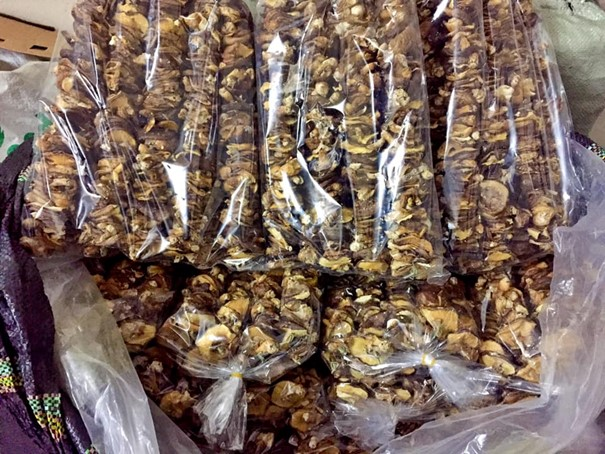
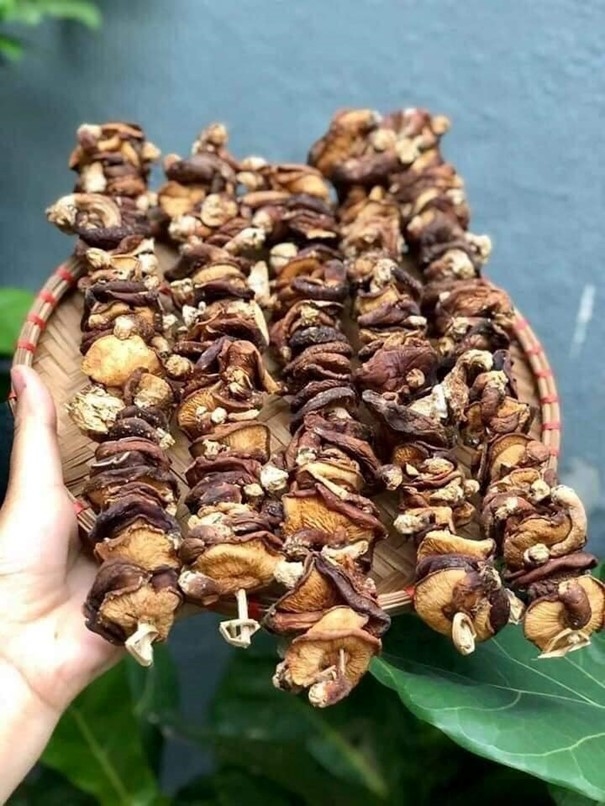

Nấm hương rừng
Nấm hương thường được sử dụng chế biến nhiều món ăn nhưng ít người biết đến tác dụng trị liệu của nó. Trong Đông dược, nấm hương được coi là vị thuốc bổ nổi tiếng, có vị tươi thơm nên được tôn là “Dược diệu” chống suy lão và giúp trường thọ.
Cao Bằng không chỉ là vùng đất nổi tiếng về phong cảnh thiên nhiên, di tích lịch sử cách mạng mà còn là nơi lưu giữ được những nét văn hóa ẩm thực tinh tế và độc đáo. Vùng đất này được thiên nhiên ban tặng cho vô số các đặc sản của núi rừng vô cùng thơm ngon, trong đó không thể không kể đến Nấm hương rừng Cao Bằng. Nấm hương rừng Cao Bằng về hình thức cũng giống như các loại nấm hương khác nhưng về hương vị thì những ai đã thưởng thức một lần chắc sẽ không thể quên được mùi thơm đặc biệt này.
Chọn mua loại nấm hương ngon, chất lượng tốt thì bảo quản sẽ lâu hơn. Khi chọn nên chọn loại nấm chân nhỏ, mình dày có màu nâu tự nhiên. Khi sờ tay vào thấy tay khô là nấm hương tốt, được phơi khô tự nhiên. Có thể hong nắng 1 đến 2 nắng để nấm hương khô hơn. Sau đó cho nấm hương vào túi zip hoặc hộp nhựa kín đậy lại. Như vậy nấm hương sẽ giữ được hương thơm tự nhiên và không bị ẩm, mốc. Ta cũng có thể bọc nấm hương lại và cất trong ngăn mát tủ lạnh. Khi mua nấm hương về sử dụng, bạn chỉ nên dùng trong vòng 12 tháng. Không nên để nấm hương quá lâu vì nó sẽ mất đi hương thơm tự nhiên và không còn ngọt nữa.
Tăng cường khả năng miễn dịch của cơ thể: Nấm hương được coi là thực phẩm cho những người bị thiếu máu do thiếu sắt, cao huyết áp, tiểu đường, trẻ em suy dinh dưỡng Kháng khuẩn và vi rút Chống ung thư Giảm Cholesterol Giải độc và bảo vệ tế bào gan Thanh trừ các gốc tự do và chống lão hoá.
Nấm hương thường được sử dụng chế biến nhiều món ăn nhưng ít người biết đến tác dụng trị liệu của nó. Trong Đông dược, nấm hương được coi là vị thuốc bổ nổi tiếng, có vị tươi thơm nên được tôn là “Dược diệu” chống suy lão và giúp trường thọ. Nhiều nghiên cứu đã xác nhận trong nấm hương chứa một hàm lượng chất khoáng rất phong phú như kali chiếm tới 64% của toàn bộ chất khoáng. Ngoài ra còn chứa các loại vitamin B2, D, PP, có protein, chất xơ, lipid, polisacarit có tác dụng nâng cao sức đề kháng của cơ thể. Kết quả nghiên cứu cho thấy nấm hương là loại rất giàu dược tính. cánh nấm mỏng, xơ, mùi rất thơm, phơi khô tự nhiên, không chất bảo quản Nấm hương được mệnh danh là “hoàng hậu thực vật”, là “vua của các loại rau” (can thái chi vương) vì nấm hương là loại thực vật giàu protein nhất (12 tới 14g protein/100g nấm hương khô, nhiều hơn bất cứ loại rau nào và có thể so sánh với lượng protein trong thịt).